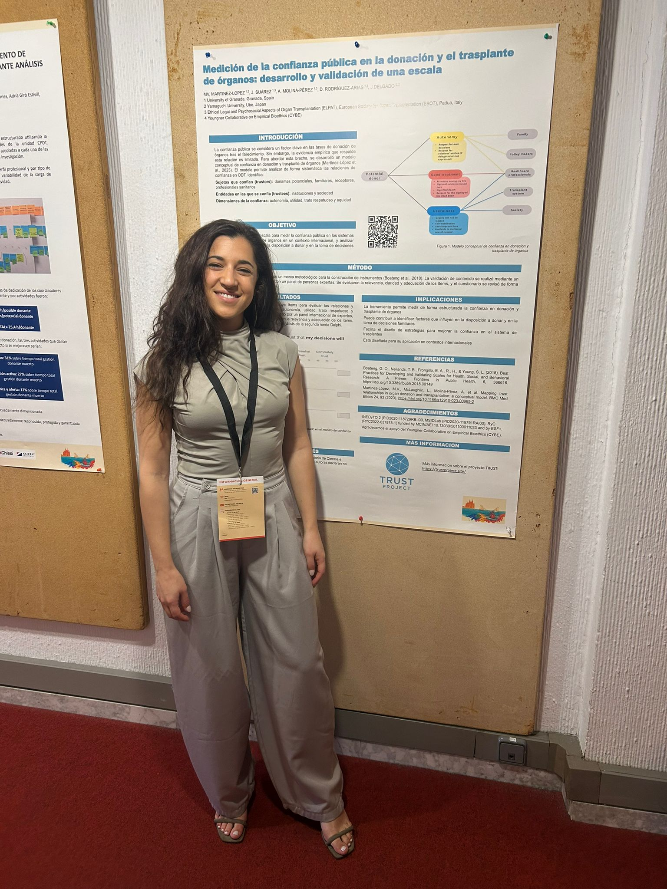

22-24th April 2026
XL Congreso Nacional de Coordinadores de Trasplantes
María Victoria Martínez-López presented a poster outlining the TRUST Project, which focuses on the development and validation of an instrument to measure public trust in organ donation and transplantation systems. The poster presentation also offered an opportunity to share the project's current progress—following the second round of the Delphi process—and to gather feedback from professionals in the field, which will be essential for its further development.